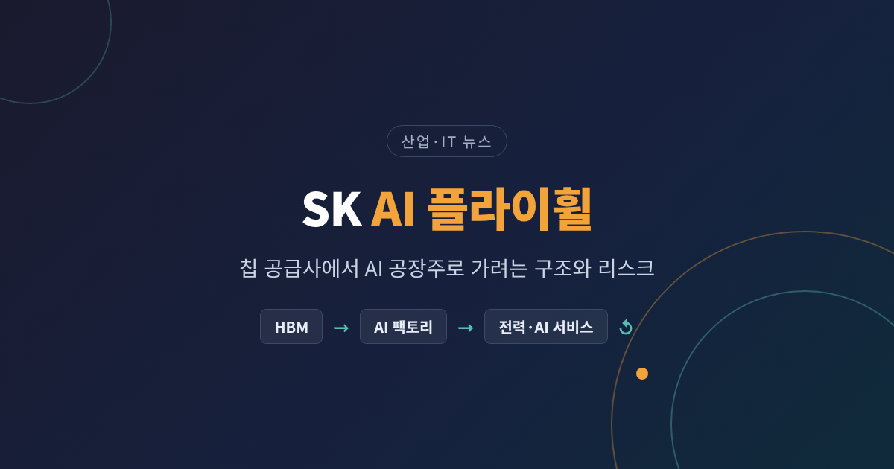
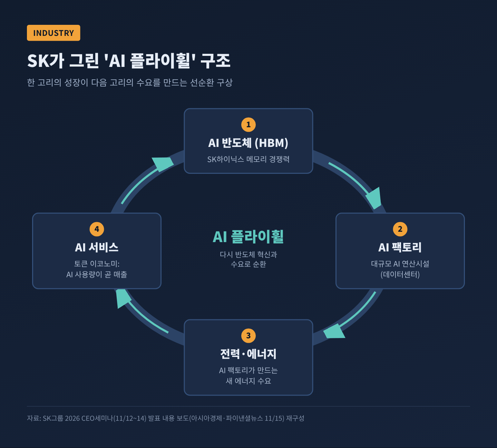
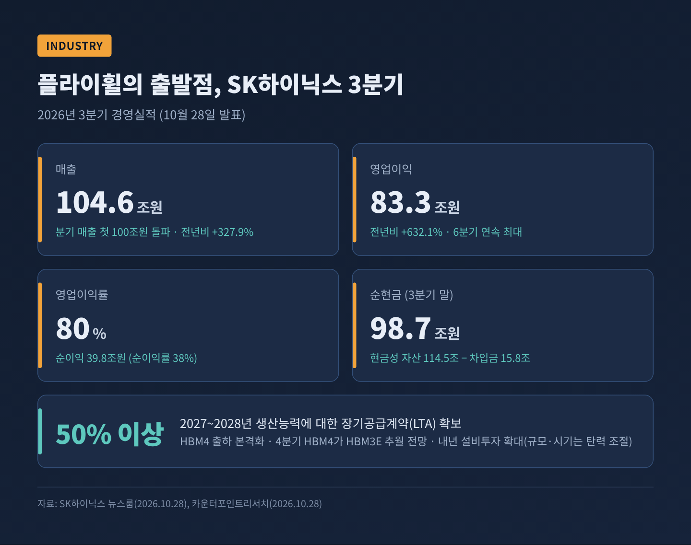
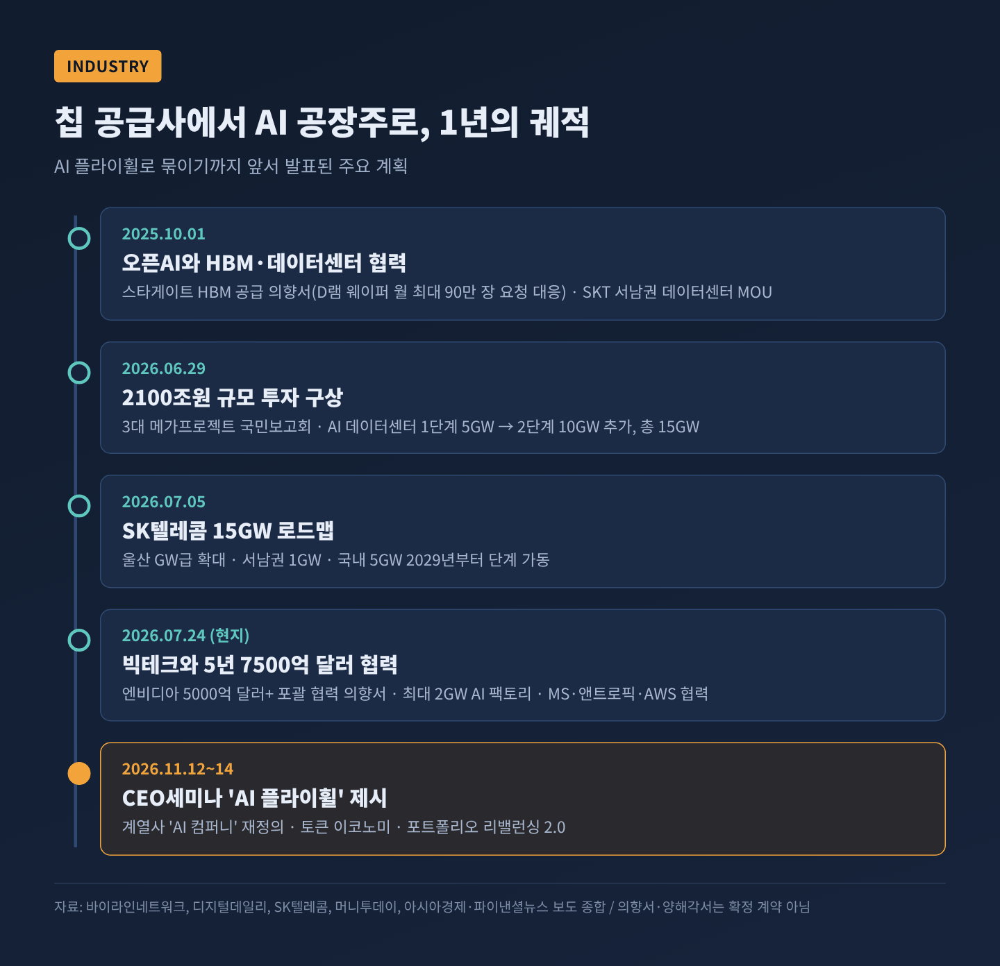
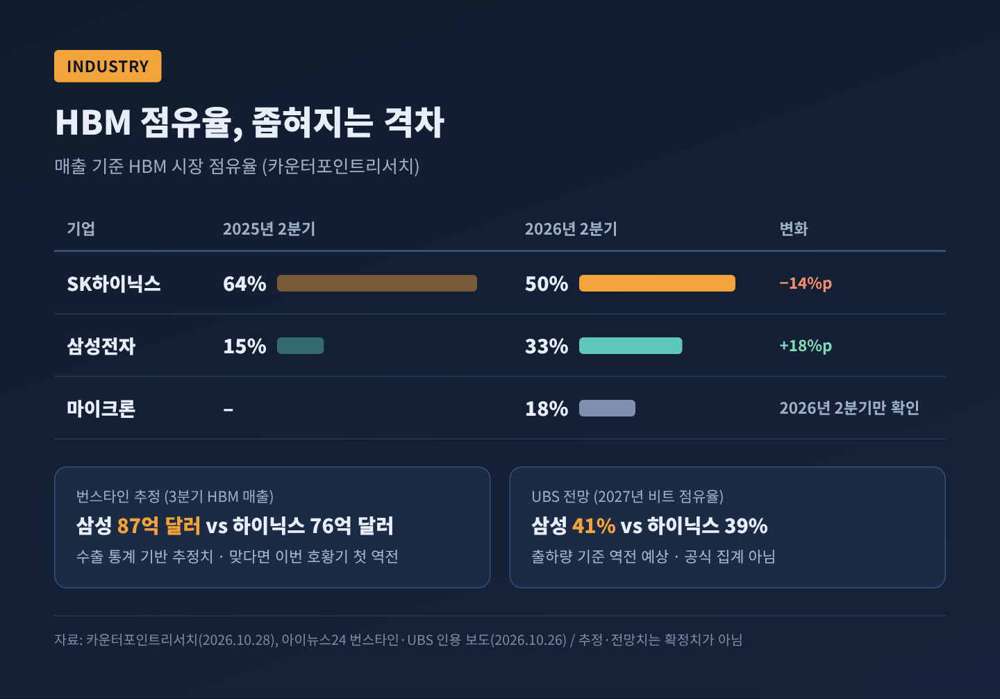
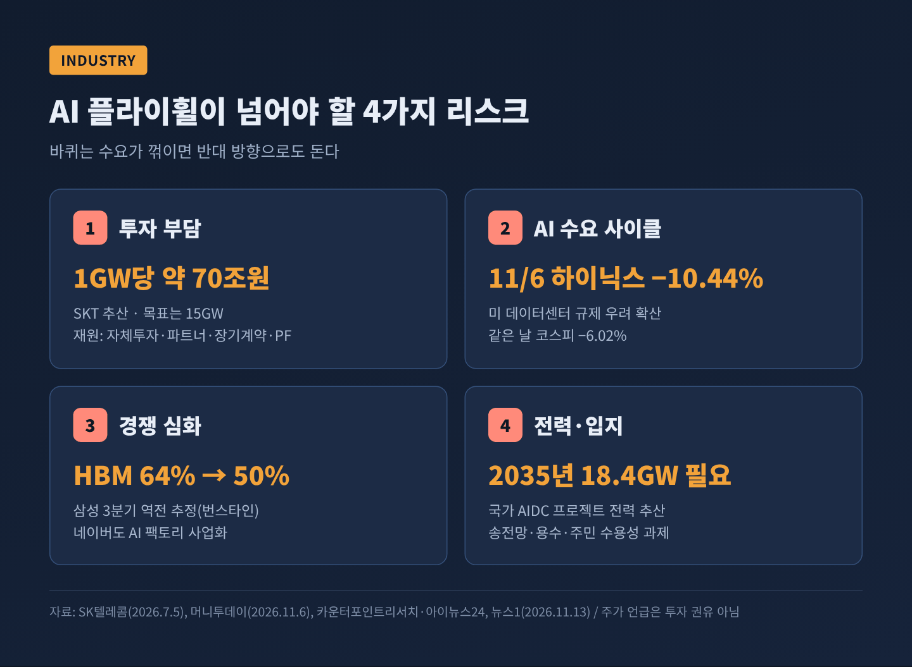

SK AI 플라이휠, 칩 공급사에서 AI 공장주로 가려는 구조와 리스크

이번 글에서는 최태원 SK그룹 회장이 꺼내 든 'AI 플라이휠' 구상을 정리해 보겠습니다. HBM을 팔던 회사가 왜 데이터센터와 AI 서비스까지 손에 쥐려 하는지, 그 길에 어떤 위험이 놓여 있는지를 함께 짚어봅니다.
3줄 요약
- SK는 11월 12~14일 이천 SKMS연구소 '2026 CEO세미나'에서 반도체→AI 팩토리→전력·AI 서비스가 서로 수요를 키우는 'AI 플라이휠'을 그룹 전략으로 제시했습니다.
- 출발점은 3분기 영업이익 83조원을 낸 SK하이닉스의 HBM이고, 다음 고리는 SK텔레콤이 2035년까지 15GW로 키우겠다는 AI 데이터센터입니다.
- 다만 막대한 투자 부담, AI 수요 사이클, 삼성전자의 HBM 추격, 전력·입지 문제가 동시에 걸려 있어 '선순환'이 자동으로 굴러가지는 않습니다.
■ 무슨 일이 있었나
SK그룹은 15일, 사흘간 열린 CEO세미나 내용을 공개했습니다. 최태원 회장, 최재원 수석부회장, 최창원 수펙스추구협의회 의장과 주요 계열사 경영진 50여 명이 모인 자리였습니다. 10월 말 인사로 새로 선임된 사장들도 처음 합류했습니다.
참고로 이번 발표 무대는 'SK AI 서밋'이 아니라, 매년 11월 그룹 전략을 정하는 내부 회의인 CEO세미나입니다.
최 회장은 14일 기조연설에서 계열사들에게 스스로를 'AI 컴퍼니'로 다시 정의하라고 주문했습니다. 핵심 그림은 이렇습니다. AI 반도체 경쟁력이 커지면 대규모 AI 연산시설, 즉 AI 팩토리 사업이 자랍니다. AI 팩토리가 늘면 전력·에너지와 AI 서비스 수요가 생깁니다. 그 수요가 다시 AI 팩토리와 반도체 혁신으로 돌아옵니다. 바퀴가 한 번 돌 때마다 다음 회전이 쉬워진다는 뜻에서 '플라이휠'이라는 이름이 붙었습니다.

여기에 '토큰 이코노미'라는 말이 더해졌습니다. AI 연산과 서비스가 경제적 가치로 거래되는 시장에 들어가겠다는 구상입니다. 칩을 한 번 팔고 끝내는 대신, 고객이 AI를 쓰는 양에 따라 매출이 쌓이는 구조를 노린다는 의미로 읽힙니다. 최 회장은 "AI 시대에는 혼자서 모든 것을 할 수 없다"며 글로벌 파트너와의 개방적 협력도 강조했습니다.
실행 수단으로는 비효율 사업을 정리하고 현금창출력 안에서 투자하는 '포트폴리오 리밸런싱 2.0', 그리고 기존 사업에 AI를 바로 적용하는 '실전형 AX'가 제시됐습니다. 하이닉스는 AI와 디지털 트윈을 결합한 스마트 팹으로 생산 효율을 높이고 있고, SK이노베이션은 울산 공정 데이터를 연결해 수율을 개선했다는 사례가 소개됐습니다.
다만 이번 세미나 보도에는 새 투자액이나 파트너 이름, 수치 목표가 없습니다. 아래에 나오는 숫자는 모두 앞서 따로 발표된 계획들입니다.
■ 왜 중요한가 — 부품 공급사의 한계를 넘으려는 시도
예전 SK의 반도체 사업은 '좋은 부품을 만들어 파는 일'이었습니다. 지금 그리려는 것은 그 부품이 들어간 공장을 짓고, 공장이 만든 지능을 빌려주는 일까지입니다.
출발점의 체력은 분명합니다. SK하이닉스는 10월 28일 3분기 매출 104조6155억원, 영업이익 83조3338억원을 발표했습니다. 분기 매출이 처음 100조원을 넘었고, 영업이익률은 80%에 이릅니다. 순현금도 98조7000억원까지 쌓였습니다. 회사는 2027~2028년 생산능력의 절반 이상에 대해 장기공급계약을 확보했다고 밝혔습니다.

그런데 메모리는 본래 가격이 크게 오르내리는 산업입니다. 아무리 지금 호황이어도 부품 공급사는 고객사의 투자 계획에 실적이 묶입니다. AI 팩토리와 서비스까지 가지면, 칩 수요를 스스로 만들어내는 고리가 하나 더 생깁니다. 이 구상의 본질은 결국 '수요를 남에게만 맡기지 않겠다'는 데 있다고 봅니다.
■ 배경 — 1년 사이 쌓인 약속들
이 구상은 하루아침에 나온 말이 아닙니다. 지난 1년여 동안 굵직한 발표가 차례로 이어졌습니다.
- 2025년 10월 1일: 최 회장과 샘 올트먼 오픈AI CEO가 만나, 하이닉스가 '스타게이트' 프로젝트에 HBM을 공급하는 의향서를 맺었습니다. D램 웨이퍼 기준 월 최대 90만 장 규모의 요청에 대응하는 내용입니다. SK텔레콤은 서남권에 오픈AI용 데이터센터를 함께 짓는 양해각서를 체결했습니다.
- 2026년 6월 29일: 청와대 '3대 메가프로젝트 국민보고회'에서 SK는 AI 데이터센터와 반도체에 총 2100조원 규모의 투자 구상을 내놨습니다. 데이터센터는 먼저 5GW, 이어 10GW를 더해 15GW로 키운다는 계획입니다.
- 7월 5일: SK텔레콤이 15GW 로드맵을 구체화했습니다. 울산을 GW급으로 키우고 서남권 1GW를 더해 국내 5GW를 2029년부터 단계적으로 가동한다는 내용입니다.
- 7월 24일(현지): 샌프란시스코 행사에서 SK는 엔비디아 등 글로벌 빅테크와 5년간 7500억 달러 규모의 메모리·AI 인프라 협력을 발표했습니다. 이 가운데 엔비디아와는 5000억 달러 이상 규모의 포괄 협력 의향서를 맺었습니다.

7월 협력에는 SK텔레콤이 엔비디아 차세대 GPU로 국내 최대 2GW 규모의 AI 팩토리를 짓고, 하이닉스 HBM4가 들어간 '베라 루빈' 시스템을 내년부터 들여오는 계획이 담겼습니다. 하이닉스와 마이크로소프트의 서버 메모리 장기 공급, SK텔레콤과 앤트로픽의 GW급 데이터센터 협력, 아마존웹서비스(AWS)와의 울산 협력 확대도 함께 발표됐습니다.
칩을 공급하는 회사가, 같은 칩을 사서 쓰는 인프라 사업자가 되는 구조입니다. 이번 CEO세미나는 이렇게 흩어진 약속들을 하나의 순환 논리로 묶은 자리로 보는 편이 정확합니다.
■ 쟁점 1 — 투자 규모는 감당할 만한가
가장 먼저 떠오르는 질문은 돈입니다. SK텔레콤은 1GW급 AI 데이터센터에 통상 약 70조원이 들 수 있다고 설명했습니다. 15GW를 단순 계산하면 그 숫자는 상상하기 어려운 규모가 됩니다. 재원은 자체 투자, 전략적 파트너, 장기 고객 계약, 프로젝트 파이낸싱을 섞겠다는 입장입니다.
최 회장도 의구심을 알고 있습니다. 그는 11월 5일 서울대 강연에서 "정상적인 계획이냐"는 질문이 나온다는 점을 인정하면서도, "베팅을 안 하고서는 쫓아갈 방법이 없다"고 말했습니다. 예전에는 200조원도 엄청나 보였지만 지금은 그 열 배가 됐다는 말도 덧붙였습니다.
흥미로운 점은 최 회장 스스로 거품을 경계했다는 사실입니다. 그는 9월 울산포럼에서 기업들이 AI에 막대한 돈을 쓰면서도 수익 없이 거품처럼 꺼질 수 있다고 우려했습니다. 그래서 "AI로 돈을 벌어 재투자하는 지속가능한 모델"이 중요하다고 했습니다. 선순환 구상은 바로 그 질문에 대한 SK식 답안인 셈입니다.
실제 숫자는 아직 앞단에 쏠려 있습니다. SK텔레콤의 3분기 매출은 4조4973억원, 영업이익은 5523억원이었지만, AI 데이터센터 사업 매출은 따로 공개되지 않았습니다. 울산·서울에 짓고 있는 신규 시설은 약 180MW 규모입니다. 15GW 목표와 비교하면 이제 막 첫 삽을 뜬 단계입니다.
■ 쟁점 2 — 경쟁자와 수요 사이클
바퀴의 첫 고리인 HBM부터 경쟁이 거세졌습니다. 카운터포인트리서치에 따르면 2026년 2분기 매출 기준 HBM 점유율은 SK하이닉스 50%, 삼성전자 33%, 마이크론 18%였습니다. 1년 전 64% 대 15%였던 격차가 크게 좁혀진 것입니다.

번스타인은 3분기 HBM 매출을 삼성 87억 달러, 하이닉스 76억 달러로 추정했습니다. 수출 통계를 바탕으로 한 추정치이긴 하지만, 맞다면 이번 호황기에 처음 순위가 바뀌는 셈입니다. UBS는 내년 출하량 기준으로도 삼성 41%, 하이닉스 39%의 역전을 예상했습니다. 첫 고리가 약해지면 바퀴 전체의 회전력도 떨어집니다.
AI 인프라 시장도 SK만의 무대가 아닙니다. 네이버는 미국 AI 추론 기업과 약 2조원 규모의 컴퓨팅 공급 계약을 맺었고, 엔비디아와 브룩필드 자금을 합쳐 100억 달러 규모의 AI 팩토리 사업을 추진합니다. 세종 시설은 내년 상반기 55MW로 시작해 2028년 200MW까지 늘린다는 계획입니다.
수요 사이클도 변수입니다. 미국 중간선거 이후 AI 데이터센터 규제가 강해질 수 있다는 우려가 번지자, 11월 6일 코스피는 6.02% 떨어졌고 SK하이닉스 주가는 하루 10.44% 급락했습니다. 당시 증권가에서는 AI 인프라 자금조달 여건 악화와 신용 우려가 함께 지목됐습니다. 실제 규제가 생긴 것은 아니지만, AI 투자 심리가 얼마나 예민한지를 보여준 장면입니다.
■ 쟁점 3 — 전력·입지, 그리고 '확정 수요'
AI 팩토리는 칩만으로 돌아가지 않습니다. 에너지경제연구원은 국가 AIDC 메가프로젝트에 2035년 기준 18.4GW, 연간 약 121TWh의 전력이 필요할 것으로 추산했습니다. 전문가들은 장기 전력 단가, 송전망 일정, 용수, 보안, 지역 주민의 수용성을 동시에 풀어야 한다고 지적합니다.
제도는 조금씩 갖춰지고 있습니다. AI 데이터센터 특별법이 내년 3월 10일 시행돼 인허가 일괄처리와 비수도권 전력계통영향평가 면제 등이 도입됩니다. 그래도 법이 전기를 만들어 주지는 않습니다.
더 근본적인 질문은 수익성입니다. 딜로이트 한국은 이런 시설의 수익성이 설비 규모가 아니라 확정 수요, 전력, 자본 구조, 서비스 주도권에 달려 있다고 분석했습니다. 핵심 고객을 먼저 잡고 단계적으로 투자하며, 최소 계약 용량과 장기 사용계약을 확보하라는 권고입니다. SK가 내세운 빅테크 협력 상당수는 아직 의향서와 양해각서 단계라는 점을 기억해 둘 필요가 있습니다.

바퀴라는 비유에는 양면이 있습니다. 수요가 붙으면 반도체·데이터센터·서비스가 서로를 밀어 올리겠지만, 수요가 꺾이면 같은 연결 고리를 따라 부담이 함께 번질 수 있습니다. 이것은 사실이 아니라 구조에서 나오는 해석입니다만, 계열사를 하나의 바퀴로 묶을수록 위험도 한 방향으로 쏠린다는 점은 분명합니다.
■ 전망 — 무엇을 지켜봐야 하나
앞으로 확인할 지점은 세 가지 정도로 압축됩니다.
- 의향서가 계약으로 바뀌는가. 엔비디아·앤트로픽·오픈AI와의 협력이 최소 계약 용량과 장기 사용계약으로 확정되는지가 첫 시험대입니다.
- 울산이 제때 돌아가는가. 최 회장은 9월에 울산 용량을 "거의 900MW" 확보했고 내년 말 가동이 목표라고 말했습니다. 첫 대형 시설의 가동 시점과 가동률이 플라이휠의 실제 회전 속도를 보여줄 것입니다.
- HBM 주도권을 지키는가. 하이닉스는 연말까지 HBM4 생산능력을 최대로 끌어올리고 내년 설비투자를 크게 늘리겠다고 밝혔습니다. 다만 투자 규모와 시기는 수요에 따라 탄력적으로 조절하겠다고 단서를 달았습니다.
리밸런싱 2.0으로 비효율 사업을 정리해 실탄을 마련하겠다는 계획도 같이 지켜볼 대목입니다. 투자는 앞당기고 수익은 늦게 오는 구조에서, 현금이 버텨주는 기간이 곧 전략의 수명이기 때문입니다.
정리하면 이렇습니다. SK의 AI 플라이휠은 메모리 호황이 만든 체력을 데이터센터와 서비스로 옮겨 심으려는 시도입니다. 방향 자체는 설득력이 있지만, 바퀴를 처음 돌리는 데 드는 힘이 워낙 큽니다.
"부품을 파는 회사에서, 지능을 파는 회사로."
이 전환이 성공할지 묻는다면, 지금은 계획보다 계약서와 가동률이 답을 줄 것이라고 말씀드리겠습니다.
※ 본문의 주가·실적 언급은 정보 제공 목적이며 특정 종목에 대한 투자 권유가 아닙니다.
출처: 아시아경제(11/15), 파이낸셜뉴스(11/15), 뉴스1(11/13), MTN(11/10), SK하이닉스 뉴스룸(10/28), 카운터포인트리서치(10/28), 아이뉴스24(10/26), SK텔레콤 보도자료(7/5), SK텔레콤 뉴스룸(11/4), 디지털데일리(6/29), 머니투데이(7/25), 바이라인네트워크(2025/10/1), 헤럴드경제(9/13), 머니투데이(11/5), 머니투데이(11/6)
#SK그룹 #AI플라이휠 #최태원 #SK하이닉스 #HBM #AI데이터센터 #AI팩토리 #SK텔레콤